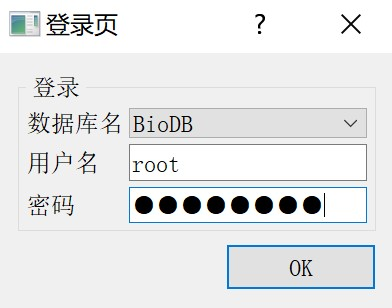
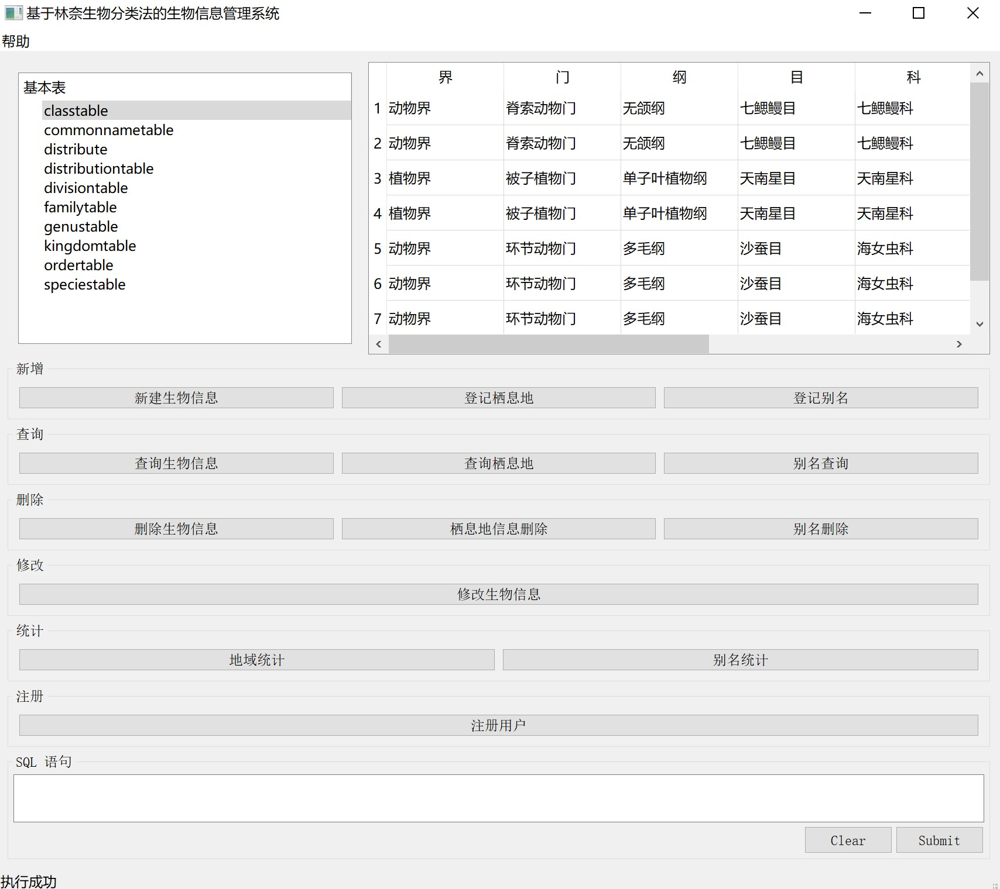
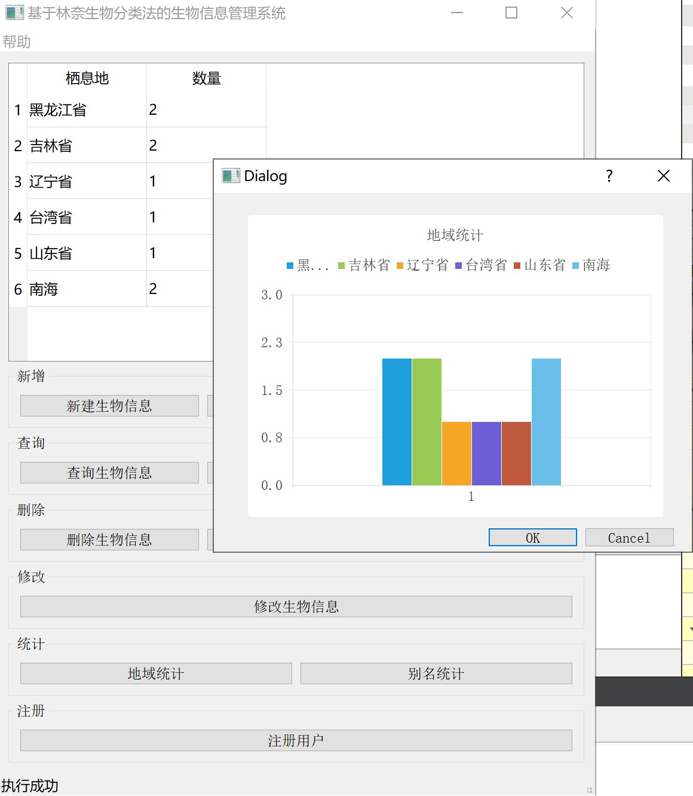
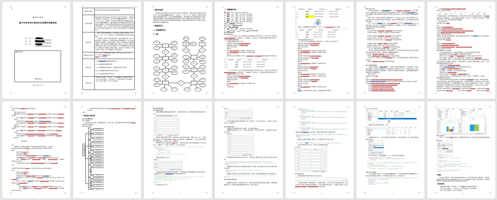

BioDBSystem
基于林奈生物分类法的生物信息管理系统（数据库课程设计作业）
建立了生物信息数据库，其中涵盖了生物的分类信息，域、界、门、纲、目、科、属和种，以及生物的栖息地和别名等附加信息。
在其基础上建立了信息管理系统，能够在图形界面上进行注册和登录，权限控制，对生物信息的各种增删查改，以及对插入和修改时间的登记。

管理员登录时，提供了SQL的接口和基本表的展示，对于单表支持在图形化界面上删改。另外还分为研究者和管理者两个角色作为系统的使用者，此时隐藏管理员后台的内容，前者能进行查询插入删除和修改，而后者只支持查询。同时支持统计功能，对部分数据进行可视化展示。
管理员界面如下

而非管理员界面如下

详细报告以及技术支持可联系：chwhc0@outlook.com 或 1073486274（QQ，请备注来意）
